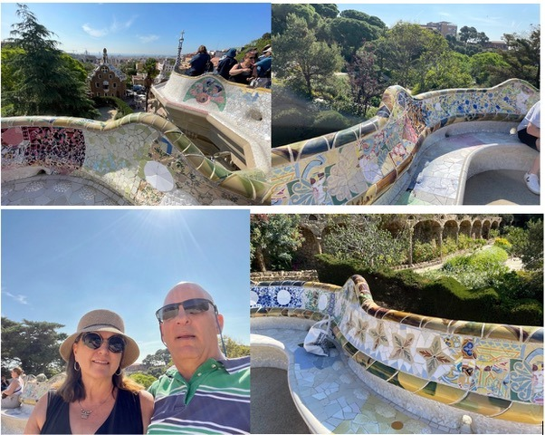

Mosaics fascinate me! The intricacies and beauty of the work, not to mention the sheer amount of time, dedication, and hard work required of the artist to create something beautiful and meaningful out of all those tiny little pieces, leave me in awe. Whether it’s mosaic tiles in a bathroom or kitchen (I know, I’m weird!), a massive iconic work by a renowned artist, or anything in between, I’m drawn to them.
Bryan and I found ourselves in Barcelona, Spain, a few years ago. On a bit of a whim, we decided to visit Park Güell. Now, we’re not exactly what you’d call “art aficionados,” and we were just learning about Antoni Gaudi, the famous architect who built Park Güell and other well-known attractions in Barcelona, so we had no idea what awaited us. But after experiencing it, I agree entirely with the description I later found on a website:
“In Park Güell, architecture and nature merge in a breathtaking way. Immerse yourself in an incomparable masterpiece by Antoni Gaudí. Magical gardens, mysterious paths, and colorful mosaics invite you to take a fascinating walk. Let yourself be enchanted by the unique vision of one of the greatest architects in history and experience a place full of vibrant atmosphere and creative design.”
The park is indeed everything Barcelona.de described. The scope of work required from Gaudi must have been astronomical, but the results were indeed something to behold!
One area of the park that captivated me was the esplanade. From this vantage point, you have one of the best views of Barcelona. But the bench on the esplanade from which you can enjoy this breathtaking view impressed me even more. The bench has an unusual profile built around its edge and is covered in... can you guess? Mosaics! As I took in the scene and admired the beauty, our guide, as a side note, mentioned that the pieces Gaudí used to create the mosaics on the bench were “discarded or unused glazed ceramics or tiles that he broke into pieces.” He went on to say something about how these mosaic fragments, all different colors and textures, remarkably enlivened what would otherwise be a simple bench.
Sitting there, I realized the guide’s casual remarks resonated with me deeply. What an extraordinary analogy of life! All the broken, unused, or discarded pieces that has been (and sometimes still is) my life, and the astronomical amount of work God, the Master Architect, has dedicated to carefully and painstakingly enliven the mess! It all became clear to me in a new way that day on that remarkable bench. To say I was grateful that day for the picture of how God has worked and continues to work things together for good (Romans 8:28) is an understatement.
While it’s sometimes tempting to see only the mess—the broken, discarded, or unused parts of our lives and try to forget them and move on, Gaudi didn’t, and he created an unforgettable bench. God doesn’t forget or move on from our broken messes either, and much more than an unforgettable bench, He creates an unforgettable you and me! What an amazing truth! What an amazing God!
I don’t think I’ll ever forget the reminder God gave me that day on that mosaic bench. Even though Park Güell was a last-minute addition to our trip, it just might be one of my all-time favorite places we’ve visited.
Here are some pics of the bench and one of us on that famous bench:

Comments